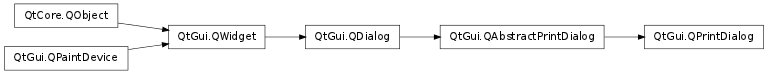

QPrintDialog ¶

Synopsis ¶
Functions ¶
- def open (receiver, member)
- def options ()
- def setOption (option[, on=true])
- def setOptions (options)
- def testOption (option)
Detailed Description ¶
The PySide.QtGui.QPrintDialog class provides a dialog for specifying the printer’s configuration.
The dialog allows users to change document-related settings, such as the paper size and orientation, type of print (color or grayscale), range of pages, and number of copies to print.
Controls are also provided to enable users to choose from the printers available, including any configured network printers.
Typically, PySide.QtGui.QPrintDialog objects are constructed with a PySide.QtGui.QPrinter object, and executed using the exec() function.
printDialog = QPrintDialog(printer, parent) if printDialog.exec_() == QDialog.Accepted: # print ...If the dialog is accepted by the user, the PySide.QtGui.QPrinter object is correctly configured for printing.


The printer dialog (shown above in Plastique style) enables access to common printing properties. On X11 platforms that use the CUPS printing system, the settings for each available printer can be modified via the dialog’s Properties push button.
On Windows and Mac OS X, the native print dialog is used, which means that some PySide.QtGui.QWidget and PySide.QtGui.QDialog properties set on the dialog won’t be respected. The native print dialog on Mac OS X does not support setting printer options, i.e. PySide.QtGui.QPrintDialog.setOptions() and PySide.QtGui.QPrintDialog.setOption() have no effect.
In Qt 4.4, it was possible to use the static functions to show a sheet on Mac OS X. This is no longer supported in Qt 4.5. If you want this functionality, use QPrintDialog.open() .
See also
PySide.QtGui.QPageSetupDialog PySide.QtGui.QPrinter Pixelator Example Order Form Example Image Viewer Example Scribble Example
- class PySide.QtGui. QPrintDialog ( printer [ , parent=None ] ) ¶
- class PySide.QtGui. QPrintDialog ( [ parent=None ] )
-
Parameters: - printer – PySide.QtGui.QPrinter
- parent – PySide.QtGui.QWidget
Constructs a new modal printer dialog for the given printer with the given parent .
Constructs a print dialog with the given parent .
- PySide.QtGui.QPrintDialog. accepted ( printer ) ¶
-
Parameters: printer – PySide.QtGui.QPrinter
- PySide.QtGui.QPrintDialog. open ( receiver , member ) ¶
-
Parameters: - receiver – PySide.QtCore.QObject
- member – str
This is an overloaded function.
Opens the dialog and connects its PySide.QtGui.QPrintDialog.accepted() signal to the slot specified by receiver and member .
The signal will be disconnected from the slot when the dialog is closed.
- PySide.QtGui.QPrintDialog. options ( ) ¶
-
Return type: PySide.QtGui.QAbstractPrintDialog.PrintDialogOptions This property holds the various options that affect the look and feel of the dialog.
By default, all options are disabled.
Options should be set before showing the dialog. Setting them while the dialog is visible is not guaranteed to have an immediate effect on the dialog (depending on the option and on the platform).
- PySide.QtGui.QPrintDialog. setOption ( option [ , on=true ] ) ¶
-
Parameters: - option – PySide.QtGui.QAbstractPrintDialog.PrintDialogOption
- on – PySide.QtCore.bool
Sets the given option to be enabled if on is true; otherwise, clears the given option .
- PySide.QtGui.QPrintDialog. setOptions ( options ) ¶
-
Parameters: options – PySide.QtGui.QAbstractPrintDialog.PrintDialogOptions This property holds the various options that affect the look and feel of the dialog.
By default, all options are disabled.
Options should be set before showing the dialog. Setting them while the dialog is visible is not guaranteed to have an immediate effect on the dialog (depending on the option and on the platform).
- PySide.QtGui.QPrintDialog. testOption ( option ) ¶
-
Parameters: option – PySide.QtGui.QAbstractPrintDialog.PrintDialogOption Return type: PySide.QtCore.bool Returns true if the given option is enabled; otherwise, returns false.